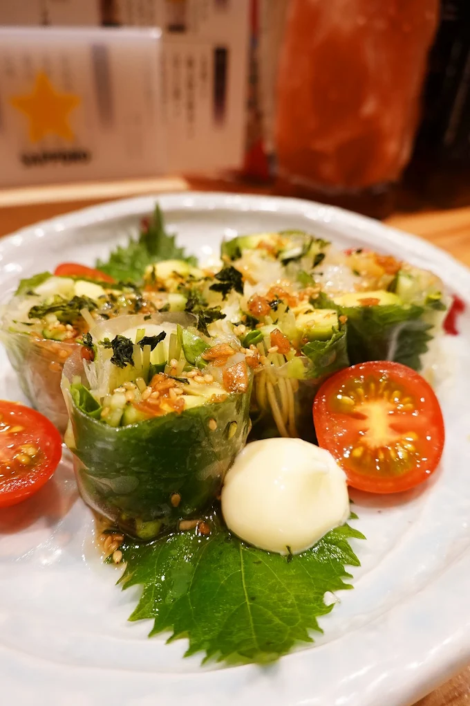
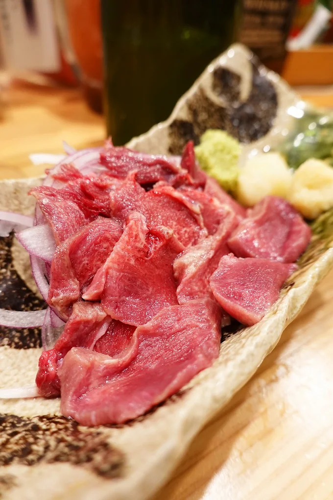

「海鮮酒場かにきち」
名古屋市中区栄４丁目
※東山線・名城線・瀬戸線-栄駅・栄町駅から徒歩5分



Googleマップの評価「星４.５」
酒の種類は多すぎて未知数、クセのある店主が作る絶品創作料理の隠れ居酒屋
店は外観からは飲食店なのか判別が不可能であるものの、料理の質は高く酒の種類はその辺のバーよりも多い。
私が行った時は予約でのコース料理かつ期間限定の全ての酒飲み放題コースを頼んだ。出てくる料理は季節の食材と店主の気分によって変わるランダムなものだったものの、料理の完成度・盛り付け・味は居酒屋で出てくるレベルではない。行ったタイミングが良く、普段ならあり得ない「全ての酒」が飲み放題で、本来ならばグラス一杯１０００円の銘柄でも何杯も飲めたのが最高だった。
店主が酒好きなのもあって酒の種類は多い。下手にその辺の居酒屋とバーを梯子するくらいならこの店に居座って飲み明かした方が良いだろう。店も一見ではどこにあるのか迷うぐらいには隠れ家感があるので、誰にも邪魔されずに飲むのに良い酒場だ。
「店舗所在地」
| 住所 | 〒460-0008 愛知県名古屋市中区栄４丁目５−１８ 栄ソシアルビル 3F |
|---|---|
| TEL | 来店後に店主に聞いてください |
| URL | instagram.com |